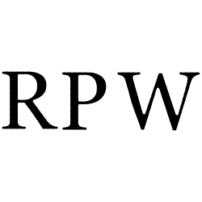
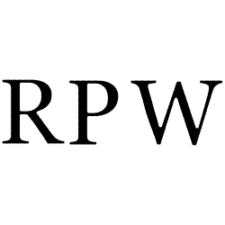

These were introductory artpieces to the Adobe Illustrator enviroment which served to teach the basics of anchor points.
 
In this project we created a watermark for future projects. We got to explore the effects avalible in Illustrator and make stylistic decisions in modifing the anchor points and corner roundness of a base font. The base font I chose was Georgia as its one of my favorites. The modification largly consisted of changes to cornor roundess and changes in line width. The main differences between the four here are the applied effects.